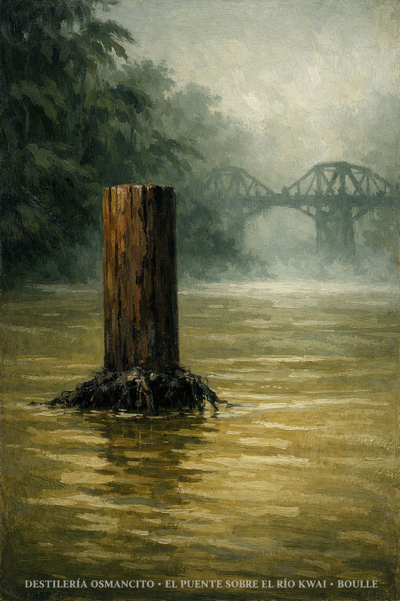
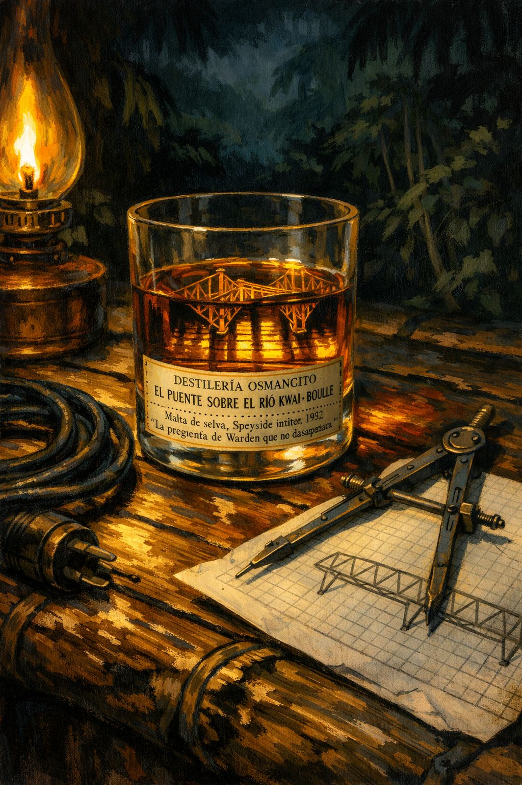
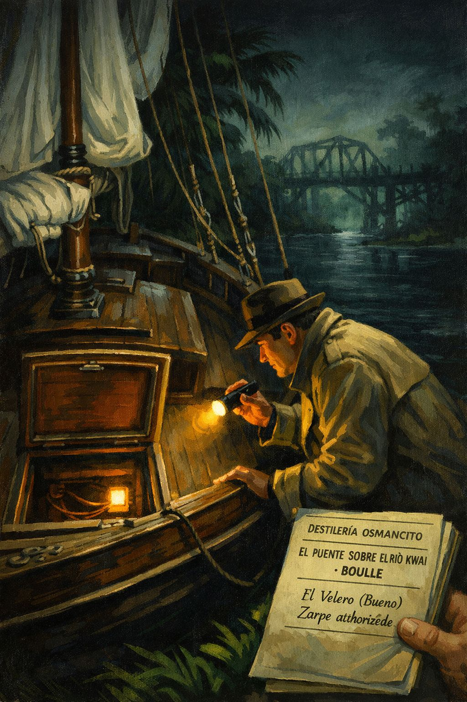
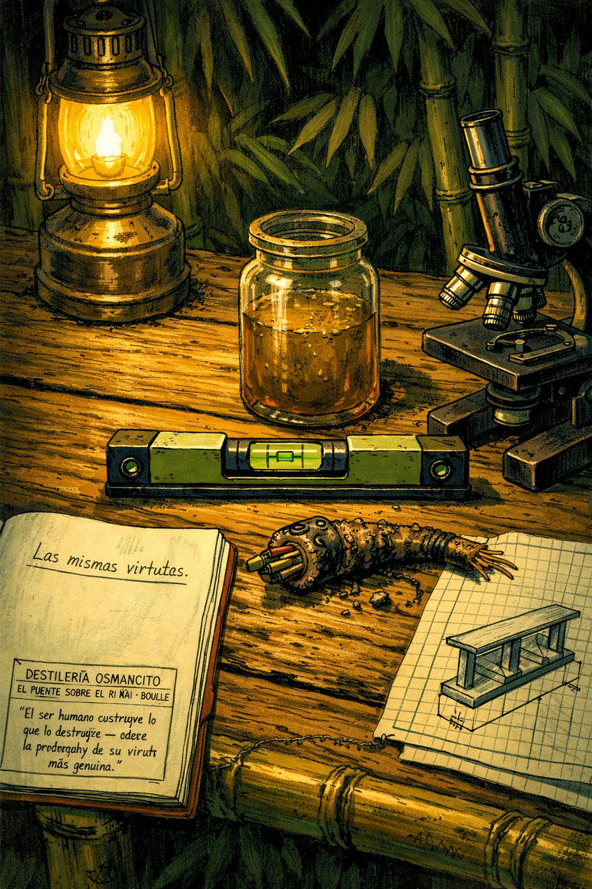
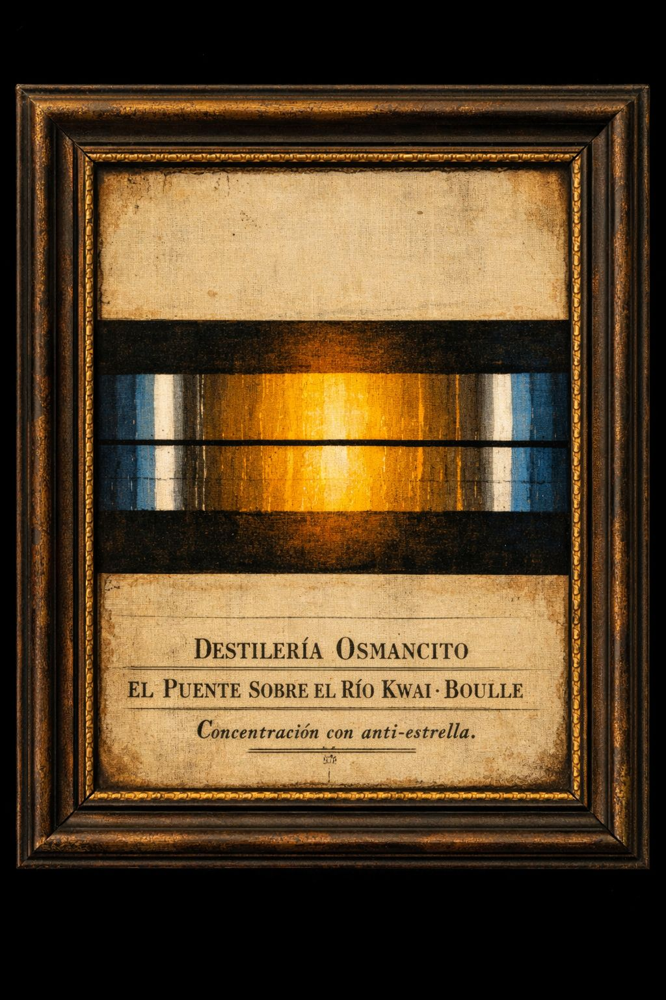

Registro de Entrada
Materia prima recibida. Iniciando registro.
Registrando datos de entrada…
Recepción completa. El Alambique puede operar.
En 1942, el coronel británico Nicholson y sus prisioneros son desplazados por los japoneses a la selva de Tailandia para construir un puente ferroviario sobre el río Kwai. Nicholson, tras una resistencia épica a trabajar bajo las órdenes del coronel Saíto, consigue dirigir la obra con plena autonomía y pone toda su capacidad, su honor y sus hombres al servicio de un puente impecable. Simultáneamente, un pequeño comando aliado —comandante Shears, capitán Warden y el aspirante Joyce— prepara en secreto la destrucción de ese mismo puente. Los dos proyectos convergen en un instante final en que el coronel, al descubrir los explosivos, se convierte en el obstáculo que salva la obra que él mismo construyó para el enemigo. El puente sobrevive. Los hombres mueren. La pregunta permanece.
¿Puede el orgullo del trabajo bien hecho convertirse en complicidad con el enemigo sin que quien lo experimenta lo advierta siquiera? El corpus no trata el tema de la guerra —trata el tema del hombre que construye porque construir es su naturaleza, aunque lo que construya traicione todo lo que dice defender.
¿Cuál es la diferencia entre el heroísmo del soldado que resiste y el del soldado que sabotea, cuando ambos actúan desde el mismo impulso hacia la acción? El corpus coloca frente a frente dos formas simétricas de devoción —la del coronel y la del comando— y sugiere que nacen del mismo origen oscuro.
¿Quién ganó y quién perdió? El puente sobrevive, el tren descarrila. Los aliados mueren, el coronel muere, los prisioneros se van. Nada resuelve nada.

Módulo Alambique — Destilación
Materia prima en el alambique. Comenzando destilación.
Destilando barrica por barrica…
Componiendo el destilado maestro…
Eligiendo la bebida para la nota de cata…
Destilado Maestro
Hay hombres que construyen porque no saben hacer otra cosa. No por crueldad ni por entrega ciega a una causa: simplemente porque la forma de afrontar el mundo que a ellos les fue dada es la del constructor, y esa forma no distingue entre lo que conviene construir y lo que no. Cuando les quitas el cuartel, les dejas una selva. Cuando les quitas los soldados, les dejas a los prisioneros. Cuando les quitas la guerra, les dejas el puente. Y ellos construirán el puente.
El puente sobre el río Kwai narra esa fatalidad con la frialdad de un expediente y la elegancia de una paradoja clásica: un coronel británico, capturado por los japoneses, resiste durante semanas una humillación tras otra, niega el trabajo manual a sus oficiales con una obstinación que lo lleva casi al martirio, obtiene finalmente el mando pleno de la obra y la construye con una perfección que deja atónitos a sus captores. Construye el puente por el que pasarán los trenes japoneses, con materiales japoneses, sobre tierra japonesa, con el trabajo de sus propios hombres hambrientos y enfermos. Lo construye bien. Lo construye con orgullo. Lo construye como si fuera la catedral de Chartres.
Mientras él construye, un pequeño equipo de comandos aliados avanza por la selva con un objetivo simétrico y opuesto: destruir exactamente ese puente, exactamente esa obra. El joven Joyce nada de noche bajo el tablero, adhiere los explosivos a los pilares en la oscuridad del agua fangosa, tiembla durante horas a la espera de un tren, se prepara para apretar un mando. Toda la novela es la historia de esos dos proyectos paralelos que avanzan hacia una misma orilla sin saber el uno del otro.
Lo que Boulle describe no es la guerra. Describe algo más profundo y más perturbador: el impulso hacia la acción como fuerza autónoma, independiente de su objeto. El coronel no está traicionando a los aliados; está cumpliendo con lo que él es. Joyce no es un héroe; es un joven que pasó dos años dibujando la misma vigueta de acero en una oficina polvorienta y encontró en la destrucción de puentes la única forma de plenitud que la vida le había ofrecido. Warden, el superviviente que regresa a Calcuta y necesita hablar durante horas para entender lo que vio, lo formula mejor que nadie, aunque sin saberlo: tal vez todos ellos actuaban de acuerdo a un ideal legítimo nacido del mismo lugar oscuro.
Al final, el tren pasa. El puente se mantiene. Los hombres mueren. Warden, impasible y deshecho, ordena disparar los morteros sobre el grupo en el que están sus camaradas agonizantes y el coronel, y lo mata a los tres, porque es lo único que todavía puede hacer. Es lo correcto. Es lo razonable. Es lo único razonable. Y el río Kwai sigue corriendo, indiferente, sobre lo que queda de todos ellos.
Barricas
Cartografía
Las barricas más cargadas de fracciones nobles son la Primera Parte I (donde se establece toda la paradoja en miniatura), la Cuarta Parte V (el soliloquio de Joyce esperando) y la Cuarta Parte VIII (el informe de Warden). Funcionan como condensadores de la tesis. Las más ligeras —Primera Parte II, Segunda Parte I— son de tránsito: introducen mundo, no añaden tensión. La Tercera Parte I y II merecen más atención de la que suelen recibir: ahí el corpus revela que Joyce es la figura simétrica de Nicholson, ambos construyendo el mismo puente desde orillas opuestas.
El tablero del puente como punto de visión y de muerte. La pregunta del puñal —¿sería capaz?— que reaparece como angustia en Joyce durante horas, y que resuelve Warden al final: fue capaz, sí, pero mató al hombre equivocado. La divisa de Yamashita —trabajen con agrado y ahínco— reaparece exactamente en boca del coronel Nicholson como principio de gestión: la ironía del corpus la exhibe sin subrayarla.
¿Puede el amor al trabajo bien hecho ser una forma de traición? El corpus lo plantea sin responderlo. ¿Es la mística de la acción una virtud o un veneno? Warden pregunta esto explícitamente y no sabe la respuesta. ¿Quién es el enemigo verdaderamente peligroso? La respuesta del corpus es incómoda: el coronel Nicholson.
Nicholson domina la Primera y Segunda parte y reaparece en las últimas páginas como figura trágica. Joyce tiene el protagonismo real de la Tercera y Cuarta. Clipton es la conciencia irónica de la primera mitad. Warden es el intérprete de la catástrofe. Shears es el único que ve la paradoja antes de que ocurra y no puede hacer nada.
El argumento avanza en espiral convergente: dos proyectos —la construcción y la destrucción— se acercan sin saberlo hasta el instante en que se topan en la orilla del río. El corpus no resuelve la contradicción: simplemente la hace estallar. Warden sobrevive. La contradicción también.
Nota de Cata

Módulo Control de Calidad — Inspección
Nave recibida. Iniciando inspección.
Inspeccionando casco y quilla…
Sondeando aguas profundas…
Examinando al capitán y su sombra…
Emitiendo veredicto de zarpe…
Clasificación de Nave
Los Seis Estratos
La tesis central es sólida y su geometría es perfecta: el hombre construye el puente que lo destruye, desde dentro. El arco argumental sostiene esta afirmación sin fisura desde la primera página hasta la última. Boulle no precisa forzar nada: la paradoja emerge naturalmente de la lógica de los personajes. La quilla —la pregunta de si la devoción al trabajo bien hecho es en sí misma una forma de traición— aguanta todo el peso.
El corpus fue escrito en 1952 por un ingeniero francés que vivió la guerra en Indochina como prisionero de los japoneses. La experiencia personal atraviesa el texto sin declararse: la precisión técnica de las escenas de construcción, la ambigüedad moral hacia los japoneses —ni demonizados ni rehabilitados—, la mirada irónica sobre el imperialismo británico desde la distancia privilegiada del francés. El contexto de descolonización también está presente: el ferrocarril construido sobre huesos de prisioneros aliados por una potencia asiática que proclamaba liberar Asia de Europa. Boulle ve la comedia de ese espejo y la deja hablar.
El corpus tiene una simetría estructural perfecta que raramente se señala: la Primera y Segunda parte construyen el puente; la Tercera y Cuarta lo destruyen. Dentro de esa simetría, cada figura tiene su eco: Nicholson/Joyce, Saíto/Green, Clipton/Warden. La arquitectura no es ornamental: produce significado.
El corpus plantea una ontología de la acción que no resuelve. Warden lo formula: tal vez el impulso que lleva al coronel a construir y el impulso que lleva a Joyce a destruir nacen del mismo lugar. Si es así, no hay lado correcto. Solo hay acción, y la acción produce resultados que nadie controla. La ética subyacente no es nihilista —hay un juicio implícito sobre el coronel— pero sí profundamente pesimista respecto a la capacidad del heroísmo de producir consecuencias coherentes con sus intenciones.
Boulle, ingeniero, proyecta en el capitán Reeves su amor al trabajo técnico bien hecho; en el coronel Nicholson, proyecta la figura del hombre de acción que admira y cuestiona al mismo tiempo. La sombra del corpus es la pregunta que ningún personaje formula directamente: ¿quién construye para quién? Los prisioneros construyen para los japoneses. Los japoneses explotan el puente aliado. Joyce destruye el trabajo de sus hermanos. Nadie es propietario de las consecuencias de sus acciones.
Puerto de origen: la experiencia de la derrota francesa en Indochina, convertida en mirada irónica sobre el honor militar británico. Carga declarada: novela de aventuras bélicas. Carga real: parábola sobre la autodestrucción de la civilización occidental a través de sus propias virtudes más admiradas. El corpus ha sido leído mayoritariamente como la primera; su durabilidad se debe a la segunda.
Sinopsis del Viaje
El puente sobre el río Kwai es un libro que se disfraza de sí mismo. Quien lo lee como una novela de aventuras bélicas recibe una historia bien construida, irónica y con un final amargo pero coherente. Quien lo lee como parábola encuentra algo más inquietante: la demostración de que las mismas virtudes que sostienen una civilización —el sentido del deber, el amor al trabajo bien hecho, la devoción a la acción— pueden operar perfectamente en el servicio del enemigo, y que la persona que las encarna no es capaz de advertirlo.
Boulle escribe con la precisión de un ingeniero y la distancia de alguien que ha visto suficiente para no escandalizarse. No hay crueldad gratuita. No hay héroes puros ni villanos de cartón. Hay, en cambio, una estructura narrativa que avanza con tanta lógica y tanta elegancia que cuando la paradoja estalla en las últimas páginas parece inevitable, como si siempre hubiera sido el único final posible.
El corpus no es perfecto. Algunos capítulos de la parte central —especialmente los técnicos sobre la construcción del puente— son áridos para el lector que no comparte el entusiasmo del ingeniero. El personaje de Joyce está construido con más cuidado que el de Shears, aunque Shears tiene las escenas más memorables. Y la voz de Clipton, que debería ser la más compleja, desaparece demasiado pronto. Pero la paradoja central es indestructible. Warden, en el último capítulo, lo intenta explicar y no puede. Esa imposibilidad de explicación es lo que el libro deja en el lector.
Nota Naval
Un velero pequeño y perfectamente aparejado, que avanza con el viento de la ironía y se bambolea levemente cuando ese viento falta. El capitán viste uniforme de gala aunque navegue en selva: ha construido algo que los japoneses necesitaban y lo ha hecho con todo su orgullo intacto. En el fondo del barco duerme un joven con las manos en carne viva y un cable en la cintura. Cuando se despierte, ya será tarde para ambos.

Módulo Laboratorio — Análisis de Sedimento
Analizando trazas del sedimento…
Leyendo con los cuatro lentes…
El compuesto base: identificado.
Ausencias
El corpus rodea sin nombrar la cuestión de la colaboración. La palabra nunca aparece. Nicholson construye un puente para el ejército japonés con los mejores materiales que puede conseguir y la máxima competencia técnica de que dispone, y el texto nunca llama a eso por lo que es. Clipton lo roza —en el momento en que le brilla el ojo al decir que sin ellos los japoneses estarían construyendo sobre fango— pero lo vuelve a dejar en suspenso. El corpus trata la ceguera moral del coronel como paradoja filosófica, no como culpa. Esa ausencia es deliberada y productiva: si el texto dijera la palabra, la novela colapsaría en un alegato.
También está ausente la perspectiva de los prisioneros rasos. Los vemos trabajar, los vemos enfermos, los vemos morir, pero nunca pensamos con ellos. El corpus los trata como coro: presencia masiva, voz única. No sabemos lo que piensan del puente. Esa ausencia de voz individual en los quinientos es una elección narrativa que concentra toda la paradoja en las figuras de autoridad y deja sin respuesta lo que los demás sintieron.
Finalmente, está ausente Tailandia. El corpus usa la selva como escenario hostil, la población tailandesa como conjunto de guías y partisanos útiles, pero nunca se pregunta qué significa para Tailandia que dos potencias imperiales usen su territorio como tablero. El ferrocarril es también una infraestructura de ocupación; el corpus lo trata como dato, no como pregunta.
Síntomas
El capítulo de la conferencia técnica (Segunda Parte III) es el momento en que la ironía del corpus alcanza su mayor temperatura, pero también el momento en que la arquitectura narrativa flaquea levemente. Boulle presenta la derrota de Saíto con tal detalle procesal que el ritmo se detiene. La escena es necesaria para mostrar la lógica implacable del coronel, pero su extensión sugiere que el autor disfruta demasiado de la humillación del japonés. Es el único momento en que la simpatía del texto por Nicholson no está mediada por la ironía de Clipton.
El personaje de Shears tiene un problema de escala. Es presentado como el más experimentado y el más lúcido de los tres, pero sus escenas en el punto de observación lo muestran deshecho, impotente, hablando solo, mordiendo su propia mano para no gritar. Esa desintegración es verosímil, pero contrasta con el pragmatismo que lo define en las escenas previas. El corpus no resuelve bien la tensión entre el Shears competente y el Shears paralizado por el horror de lo que ve.
El final, narrativamente, es el momento más logrado y el más apresurado. Los últimos tres capítulos comprimen en muy pocas páginas la escena del descubrimiento, la muerte de Joyce, la muerte de Shears, la decisión de Warden y el informe final. La austeridad es una virtud aquí, pero la muerte del propio coronel Nicholson, liquidada en una línea, merece más espacio del que recibe.
Cifras
El número tres estructura el corpus de manera casi obsesiva: tres miembros del comando aliado, tres preguntas que el corpus no responde, tres disparos en el blanco con los que Warden termina la historia, tres capas de la ironía central. El tres no es ornamental: sugiere que el corpus opera con la lógica de la dialéctica sin resolución, la síntesis siempre diferida.
El nombre del río —Kwai— aparece en el título, en el primer párrafo y en el último. Es el único elemento que abre y cierra el corpus sin transformarse. El río baja de nivel y descubre los cables; el río sigue corriendo cuando todo termina. Es el único elemento del texto que no tiene agencia humana y que decide el resultado de la operación.
La vigueta de Joyce —una libra y media de acero ahorrada en dos años de trabajo— reaparece en el momento en que Joyce se prepara para ejecutar su misión. La conexión entre la pieza diminuta que pasó su juventud optimizando y el puente que va a destruir es el nudo más comprimido del corpus: la escala del trabajo humano, su ridícula pequeñez frente a las consecuencias de la guerra.
Los Cuatro Lentes
Un comando aliado planea destruir un puente estratégico en Tailandia. Un coronel británico prisionero construye ese mismo puente para los japoneses con plena dedicación. En el momento en que el comando está a punto de destruirlo, el coronel descubre los explosivos y alerta al enemigo. El puente sobrevive. Los hombres mueren.
Las mismas virtudes —honor, disciplina, amor al trabajo bien hecho, sentido del deber— que convirtieron al coronel en un héroe durante la resistencia inicial lo convierten en el agente involuntario de la victoria japonesa. La alegoría es la del Imperio Británico: sus virtudes más auténticas operan perfectamente al servicio de quien lo derrota. El puente es la India, Singapur, el Canal de Suez: algo construido con gran habilidad y gran orgullo, que en el momento decisivo sostiene el peso del adversario.
El corpus exige que el lector reconozca sus propias Nicholsons interiores. No es una novela sobre un inglés peculiar: es una novela sobre la ceguera estructural de quienes funcionan bien dentro de un sistema y no pueden ver más allá de las reglas de ese sistema. La exigencia moral del corpus es incómoda precisamente porque Nicholson no es un mal hombre. Es un hombre muy bueno, muy competente, muy leal —a las reglas, al trabajo, al orgullo de construir algo duradero. Y eso es exactamente lo que lo hace peligroso.
En el fondo del corpus hay una pregunta que Boulle no formula pero que atraviesa todo el texto: ¿qué hace la acción con quien la ejecuta? Joyce mata a un japonés y no puede procesar lo que ha hecho. Warden mata a sus camaradas con mortero y lo llama lo único razonable. El coronel construye el puente y muere convencido de que hizo lo correcto. El corpus guarda la sospecha de que la acción —cualquier acción suficientemente intensa— transforma al agente de manera irreversible, y que esa transformación ocurre independientemente de si el resultado fue el esperado o no. La acción como veneno y como éxtasis: eso es lo que el libro guarda en su fondo.

Módulo Etiquetado — Topología y Firma
Calculando fallas de cierre…
Mapeando el núcleo de curvatura…
Estimando la red conceptual…
Etiqueta aplicada. Lote liberado.
Fallas de Cierre
El corpus la activa en la primera página y no la resuelve en la última. Warden la roza, Clipton la insinúa, el coronel la encarna sin saberla. Es la falla de la que emergen todas las demás.
Warden la formula explícitamente en el informe final y admite que no sabe la respuesta.
El puente sobrevive pero el tren descarrila. Los aliados mueren pero el corpus no lo llama derrota. El coronel muere convencido de su victoria. El corpus se niega a emitir veredicto.
El corpus responde sí sin dudar —la resistencia fue heroica y produjo resultados reales— pero luego hace colapsar esa respuesta al mostrar que la misma lógica que produjo la resistencia produjo la colaboración. Las dos mitades de la respuesta son verdaderas y se destruyen mutuamente.
Fue capaz. El corpus cierra esa pregunta con precisión: ningún músculo de su cuerpo en tensión flaqueó. Pero abre otra inmediatamente —¿a quién mató?— que permanece sin respuesta.
El coronel Green lo dice tres veces: siempre queda algo que intentar en el ámbito de la acción. El corpus usa esa frase para señalar que la lección es exactamente lo que produjo el desastre.
Núcleo de Curvatura
Red Conceptual
Estrategia de Grandeza
